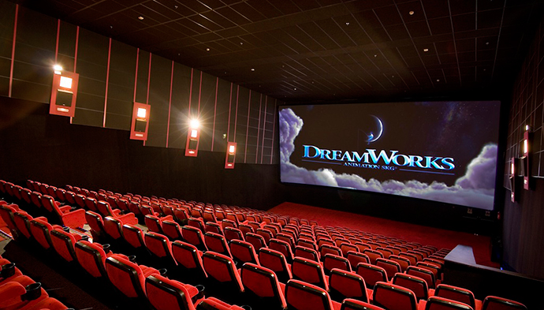
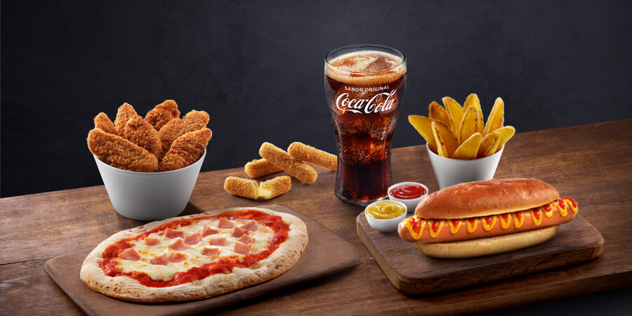

Tu nuevo cine en Alsacia
| El Cineal contamos con un total de 10 salas desde las que podrás disfrutar de maravillosas pelúclas, ya sea solo o acompañado. Hemos dotado a nuestras saslas con cómodas butacas ajustabes para las películas más largas! |  |
| Los productos de bar más selectos para acompañar tu película favorita Convierte tu visita a Cineal en una fantástica experiencia gastronómica con nuestra selección de los snacks más exclusivos para el cine. Disfruta de unos nachos, unos perritos calientes, unas tiras de pollo o comparte las mejores palomitas con tu cita. No te pierdas ninguno de nuestros menús especiales y una gran cantidad de ofertas para acompañar a tu película favorita. |  |